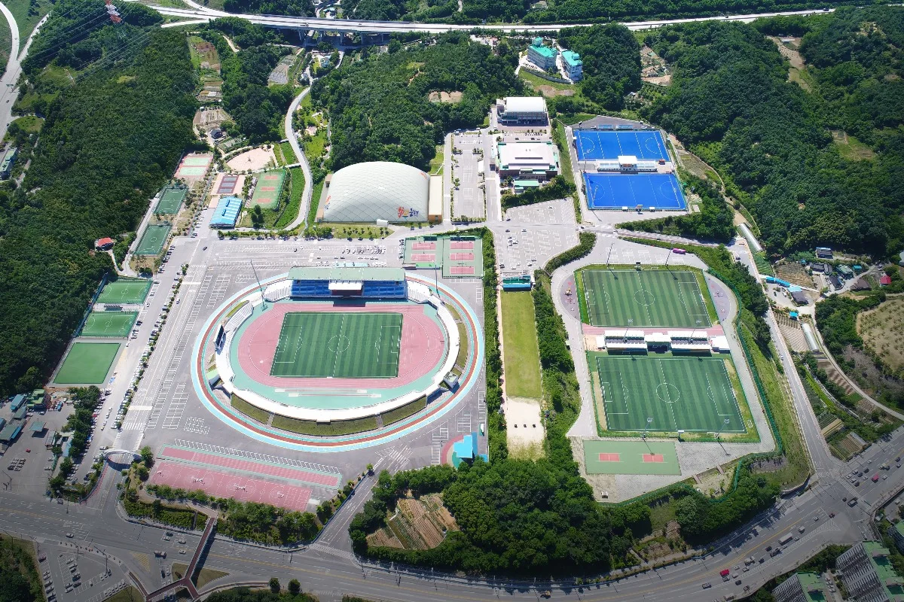
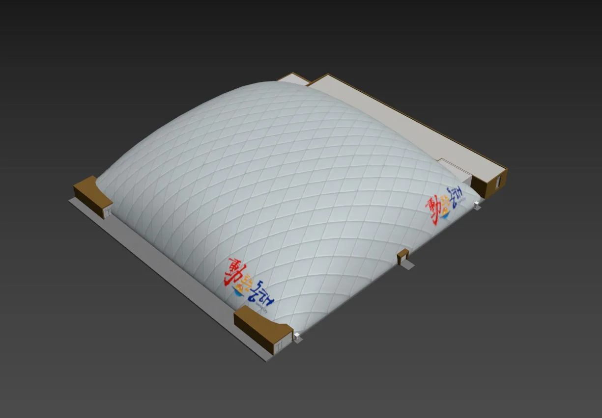
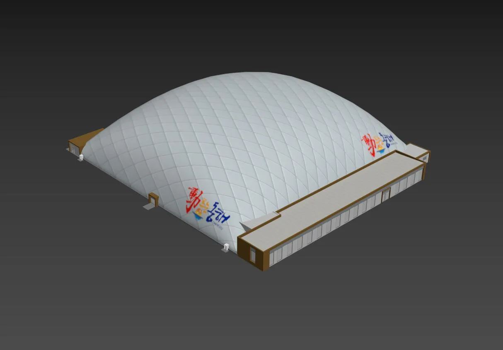

3D 모델링 제작 및 납품 과정: 디지털 세상의 창조적인 여정
현대의 디지털 시대에서 3D 모델링은 게임 개발, 영화 제작, 제품 디자인 등 다양한 분야에서 핵심적인 역할을 수행하고 있습니다. 이 글에서는 3D 모델링의 제작과정 및 납품 과정에 대해 자세히 알아보겠습니다. 진행되는 각 단계와 그 중요성을 살펴봄으로써, 디지털 아티스트와 클라이언트 간의 협업이 어떻게 형성되는지 알아보도록 하겠습니다.
1. 요구사항 분석 및 계획
3D 모델링 프로젝트의 출발은 요구사항의 분석과 계획으로 이루어집니다. 클라이언트와의 의사소통을 통해 모델링의 목적, 종류, 크기, 사용 용도 등을 정확히 파악하고, 프로젝트의 일정과 예산을 설정합니다.
2. 디자인 및 스케치
요구사항을 기반으로 스케치나 디자인을 통해 모델의 개략적인 모습을 결정합니다. 클라이언트의 피드백을 받아 수정하며 최종 디자인을 확정합니다.
3. 3D 모델링
실제 3D 모델링 작업이 시작됩니다. 모델링 소프트웨어를 사용하여 모델의 형태와 세부 사항을 구체화합니다. 다양한 도구와 기술을 사용하여 모델의 요소들을 조합하고 조정합니다.
4. 텍스처링 및 머티리얼 적용
모델에 텍스처와 머티리얼을 적용하여 모델의 재질과 현실감을 높입니다. 텍스처의 UV 언래핑과 같은 작업을 통해 텍스처를 모델에 맞게 매핑합니다.
5. 라이팅 및 렌더링
모델에 조명을 설정하여 라이팅 효과를 부여합니다. 이 단계는 모델의 시각적인 표현을 크게 영향을 미치며, 렌더링 소프트웨어를 사용하여 모델을 이미지나 동영상 형태로 렌더링합니다.
6. 품질 검수
모델의 세부 사항, 텍스처, 머티리얼, 라이팅 등을 검토하여 최종 품질을 평가합니다. 클라이언트의 피드백을 받아 필요한 수정을 진행합니다.
7. 파일 포맷 변환 및 최적화
제작된 모델을 필요한 파일 포맷으로 변환하고, 파일 크기와 성능을 최적화하여 준비합니다.
8. 클라이언트 협의 및 수정
클라이언트에게 최종 모델을 제공하고, 피드백을 받아 필요한 수정을 수행합니다. 클라이언트와의 원활한 협업을 통해 모델의 완성도를 높입니다.
9. 납품
클라이언트가 최종 모델을 승인하면, 제작된 3D 모델을 클라이언트에게 납품합니다. 필요한 모든 파일, 포맷 및 사용 가능한 리소스를 함께 제공합니다.
10. 후속 지원 및 유지보수
클라이언트가 모델을 사용하면서 발생하는 문제나 요청에 대한 후속 지원을 제공하며, 필요한 경우 모델의 유지보수 및 업데이트 작업을 수행합니다.
3D 모델링은 창의적인 프로세스와 기술의 결합으로 현실 세계를 디지털로 옮기는 과정입니다. 디지털 아티스트와 클라이언트의 협업을 통해 탄생하는 결과물은 현대 디지털 세상을 더욱 다채롭게 만들어나가는 중요한 역할을 하고 있습니다. 이 글을 통해 3D 모델링 제작 및 납품 과정의 본질적인 단계를 알려드렸습니다. 긴 글을 읽어주셔서 감사합니다.
홈페이지
https://www.makegroup.co.kr/
블로그
https://blog.naver.com/makegroupcg